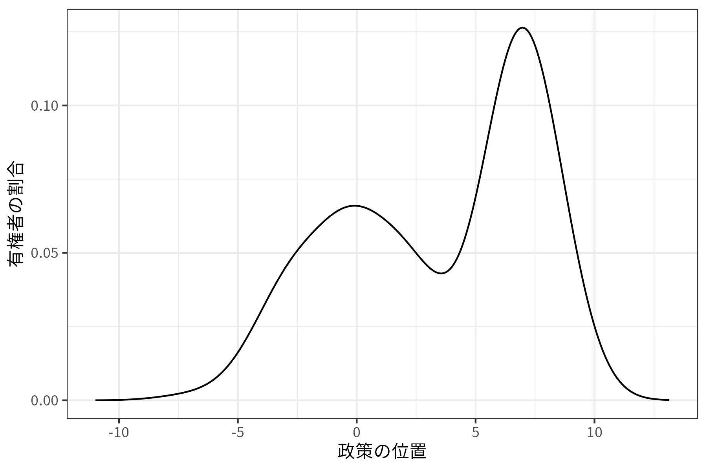
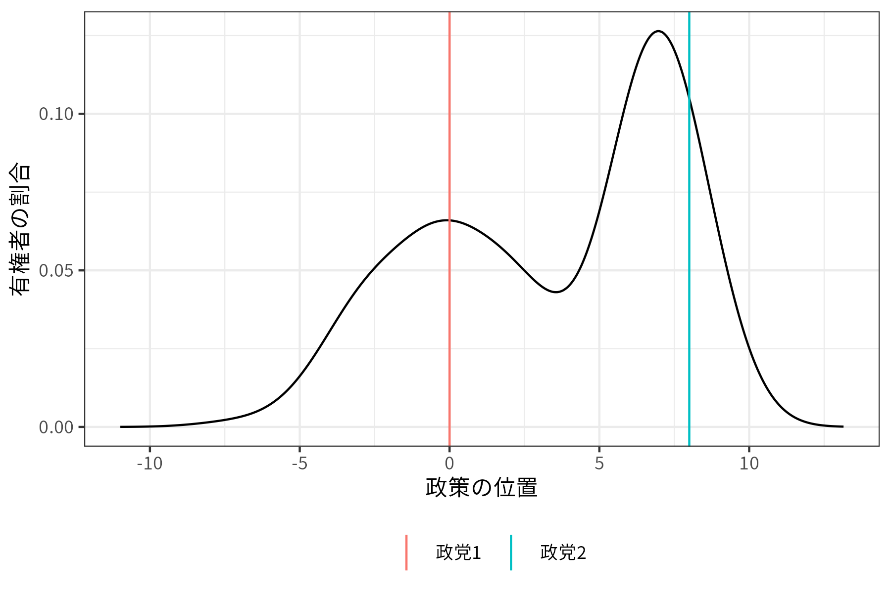

3 政党と選挙
選挙制度＝選挙（という名のゲーム）のルール
- ゲーム：互いに影響を及ぼし合う、したがって相手の出方を伺いながら自分の行動を選択する状況

→ルールの下で政治家や政党はどのように行動するのか？（選挙に意味はあるのか？）
- 政党システム、政党組織、議員行動論、政治経済学
- 建林正彦、曽我謙悟、待鳥聡史 (2008)「比較政治制度論」
3.1 政党組織
政党の機能
- 政策の形成：利益の表出、利益の集約
- 政党ラベル（ヒューリスティクス）
| 法案1 | 法案2 | 法案3 | |
|---|---|---|---|
| 議員A | 3 | -1 | -1 |
| 議員B | -1 | 3 | -1 |
| 議員C | -1 | -1 | 3 |
- 候補者のリクルート、育成
- 政府の形成
- 政治的社会化
政党の一体性
- 凝集性
- 政党規律（集権化）
- 個人投票／政党投票
- 政党内ルール
政党組織の帰結
- 国レベルのマクロな政策争点／利益誘導・財政赤字
- 派閥、後援会、族議員

- 多様性


3.2 政党システム
政党システム：政党間競争から生じる相互作用の構造（サルトーリ）
- 競争の局面：選挙、政権形成、政策形成
- 一党制、ヘゲモニー政党制
- 一党優位制
- 二党制
- 穏健な多党制
- 分極的多党制
政党システムの規程要因
- 社会的亀裂：中央／周辺、都市／農村、国家／教会、資本／労働
- 脱物質的価値：環境、自由、ジェンダー、多文化、ナショナリズム……
- 地域主義
- デュベルジェの法則：機械的要因、心理的要因
- 汚染効果
- 選挙区レベル
- \(M+1\)ルール
- 相互作用
政党システムの帰結
- 内閣の安定性
- アカウンタビリティ（説明責任、答責性、責任追及の可能性）／代表性
- 政策の継続性
- 福祉国家的政策、財政支出
政党組織・政党システムの評価軸：代表／代理
- 多様な意見を「どこで」集約するか？
3.3 選挙と政策
選挙は政策を変えるのか？
- 応答性
- 飯田健ほか (2015)「政治行動論」
- 松林哲也 (2023)「何が投票率を高めるのか」
- 北村周平 (2022)「民主主義の経済学」
選挙による代表：好みの政治家を選ぶ
- 政権交代
選挙による代理：有権者のために政治家を働かせる
- アカウンタビリティ
- 定年制、再選禁止、議員報酬
- （ダウンズの）中位投票者定理
中位投票者定理について直観的に説明します。まず、「仮定」として(1)一次元の政策空間があるとします。例えば、左に行けば行くほど増税・大きな政府で右に行けば行くほど減税・小さな政府とか、左が穏健な外交政策で右が強硬な外交政策といった状況を想像してください。そして、(2)有権者は自分の好みの政策があり、次の図のように有権者の好みは散らばっているとします。

- 図の見方としては、-10から10くらいまで政策の選択肢があり（数値自体に意味はないです）、0周辺と7周辺が多くの有権者の好みであるということです。
さらに、(3)ここでは小選挙区制を想定し、2つの政党しか候補者を立てていないとします。それぞれの政党は政策空間のうちの一点を政策として提示します。

そして、(4)有権者は誠実投票を行う、すなわち自分の好みに最も近い政策を提示している政党に投票します。したがって、2つの政党の政策の中間で2つのグループに分けられ、左側は政党1に、右側は政党2に投票します。
さて、(5)政党は政策よりも選挙で勝つことを目指しているとします。そして、小選挙区制なのでどちらか一方の政党だけが勝ちます。したがって、負ける側は少しでも多くの得票を得るために政策を変える必要があります。つまり、例えば政党1からすると、もっと政策を右に寄せて票を獲得しようとします。
もちろん、政党2も対抗しますので、政策を左に寄せていきます。
このように、2つの政党が互いに得票のために政策を調整していくと、「中位投票者」の好みの政策で膠着状態に陥ります。「中位投票者」とは、その人よりも左の人も、右の人も同じ数だけいるような人、つまり50%に位置している人です。
以上が中位投票者定理の意味と証明の直観的な説明です。もちろん、これはあくまで「理論」であって実際にそうなるかは分かりません。というか、アメリカを見れば分かるように二大政党制であっても政党の政策が同じになることはないので、現実に当てはめるには限界があります。
しかし、参政権の拡大あるいは投票率の上昇が政策を変更することを説明することはできます。上記の例で、左側にいる有権者のほうが投票率が上がったとします。すると。中位投票者は次のように左に移動します。

つまり、左と右で綱引きをしているようなもので、投票率が上がれば（その人たちが望む政策は実現しなかったとしても）政策を自分が望む方向へ動かすことができると考えられます。
- 参政権の拡大、簡易な投票環境、義務投票制


3.4 まとめ
民主主義国（特に日本を念頭）の政治について、選挙を軸に有権者と政党について学びました。
- 選挙をどのように見るか？
- 立法過程、執政制度、政官関係、官僚制、利益団体……や権威主義体制は割愛
- 次回以降のトピック
- 地方政治（官僚制も？）は宇野先生
- アメリカ（大統領制）は小浜先生
- 国際関係（や権威主義体制）はまたもや土井
伝えたかったこと
- 現象を「見たまんま」に受け止めない＝環境（制度など）の影響を考える。
- 望ましい結果を求めるなら、変えられるもの（多くの場合は環境）を変える。

- ある現象の原因を見つけるのは難しい、一つとは限らない。